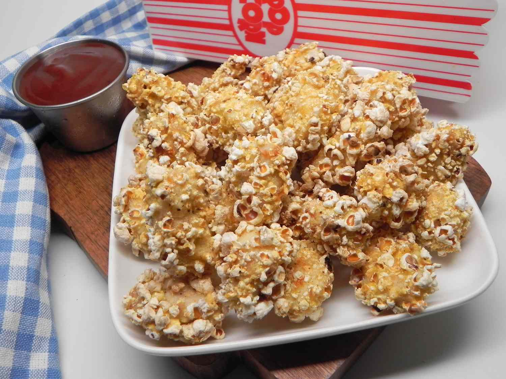

Popcorn Chicken

Description
Everyone loves popcorn chicken and there's something nostalgic about these crispy, juicy and flavorsome tiny morsels. These popcorn chicken are tender inside and crisp outside,
with bursting flavors and oh so good!
Popcorn chicken are bite-sized tender and crisp chunks of chicken that have been seasoned, breaded and deep fried to perfection, until golden. No matter how you serve, they are
fantastic and taste super delicious.
Ingredients
- 500 g Chicken breast, cut into cubes
- 1/2 cup Unsalted butter
- 2 nos Eggs, whisked
- Enough Cooking oil, for frying
Ingredients A: For Marinating
- 2 cloves Garlic, blended
- 3/4 tsp Salt
- 1/2 tsp AJI-NO-MOTO®
- 1/4 tsp Paprika
Ingredients B: For Coating
- 2 1/2 cups Corn flakes, blended
- 1/2 cup Corn flour
- 1/2 cup Wheat flour
- 1/4 tsp AJI-SHIO® Flavoured Pepper
Steps
- Marinate chicken with ingredients (A) for 30 minutes.
- Mix ingredients (B) in another container, add in marinated chicken and mix well.
- Add the chicken into the egg and mix well.
- Coat the chicken with ingredients B evenly again.
- Heat up oil and butter.
- Fried the chicken until golden brown.